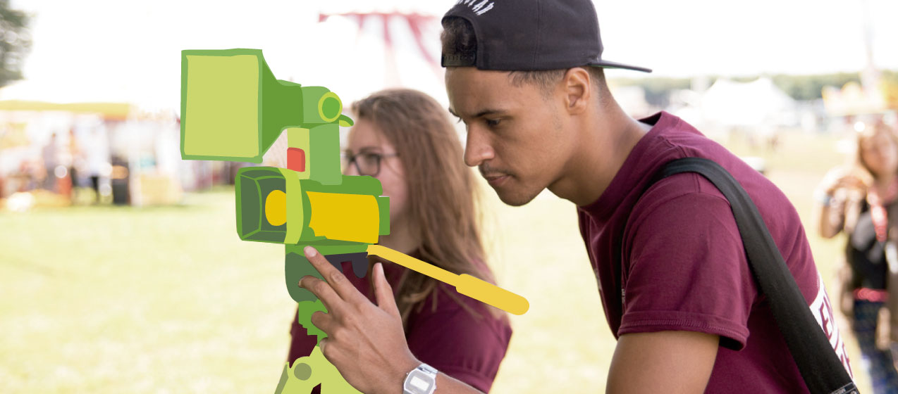
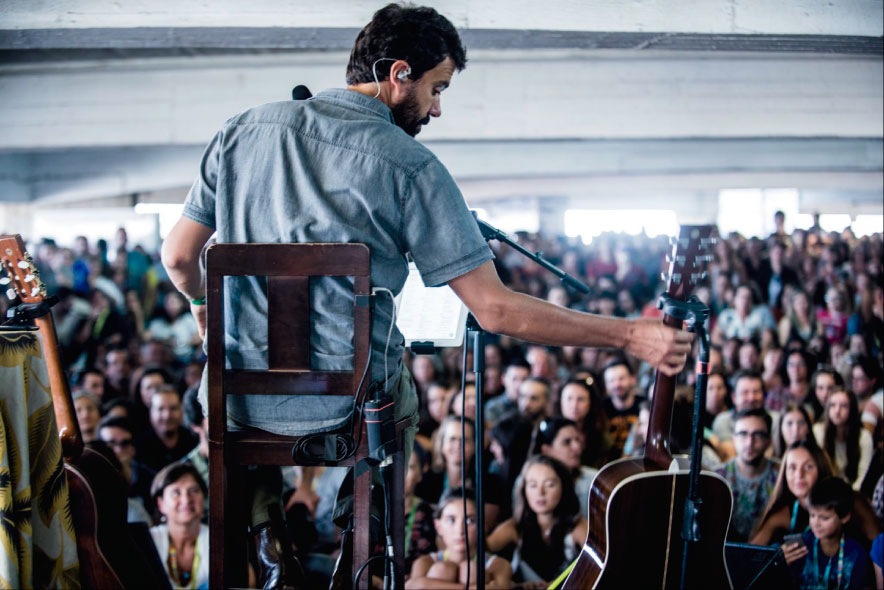

Miguel Aráujo no D´bandada
16 Janeiro
Entre as muitas novidades deste ano, o destaque maior vai mesmo para o Silo Auto, que se apresentará como o novo espaço musical desta edição, sendo o palco escolhido para um concerto inédito de Miguel Araújo, presença assídua desde a primeira edição. O músico interpretará temas que compôs para o reportório de vários artistas portugueses, como Ana Moura, António Zambujo ou Carminho.
A abrir o espaço, a partir das 14 horas, vão atuar dois artistas escolhidos pelo próprio Miguel Araújo: Edu Mundo e Tatanka. O Silo Auto vai receber, ainda, um mercado de música e um espaço de refeição para quem quiser começar esta longa maratona mais cedo.
Relacionadas


©2017 - NOS D´bandada